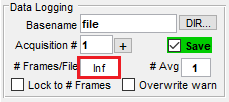

LBM Datasets#
Terms#
Light-beads microscopy is a 2-photon imaging paradigm based on ScanImage acquisition software.
In its raw form, data is saved as a 3-dimensional multi-page tiff file. Each image within this tiff file represents a page of the original document.
Frame Ordering#
ScanImage saves the 4D volume with each plane interleaved, e.g.
frame0 = time0_plane1
frame1 = time0_plane2
frame2 = time0_plane3
frame3 = time1_plane1
frame4 = time1_plane2
… and so on.
ScanImage multi-ROI#
ScanImage mROI (Multi Region Of Interest) tiff outputs are made up of individual strips called ROIs. These ROIs collectively form a ScanImage ScanField. This scanfield is really just a set of metadata describing the size and location of our images. The term ROI refers to a “subsection” of the 2D image in which the scanner momentarily stopped acquisition.
ScanImage metadata#
Each pipeline comes stocked with methods to retrieve imaging metadata.
Python#
objective_resolution: 157.5000
center_xy: [-15.2381 0]
size_xy: [3.8095 38.0952]
num_pixel_xy: [144 1200]
image_length: 11008
image_width: 145
num_planes: 30
num_rois: 9
num_frames: 1176
frame_rate: 2.1797
fov: [600 6000]
pixel_resolution: 4.5833
sample_format: 'int16'
num_pixel_xy
: The number of pixels in each ROI. This can very from the actual tiff image size.
fov
: The total image size, in micron (um).
image_length/image_width
: The total tiff size, in pixels (px).
pixel_resolution
: The size, in micron, of each pixel.
Note: With multi-ROI tiffs, the size of your tiff given by
image_sizeis likely different from the number of pixels in x and y. This is due to the time it takes the scanner to move onto subsequent ROI’s not being accounted for innum_pixel_xy. Internally, each pipeline checks for these metadata attributes and adjusts the final image accordingly.
LBM Dimensionality Semantics#
Dimension |
Description |
|---|---|
[X, Y] |
Image / 2D Plane / Frame / Field / ScanField |
[X, Y, Z] |
3D-Stack, Z-Stack |
[X, Y, T] |
Time-Series of a 2D Plane, Planar-timeseries, Movie |
[X, Y, Z, T] |
Volumetric Timeseries, Volume |
Before beginning the recording session, users have the option to split frames in the recording across multiple .tiff files. This option is helpful as it requires less work in post-processing to ensure there isn’t too much computer memory being used.
